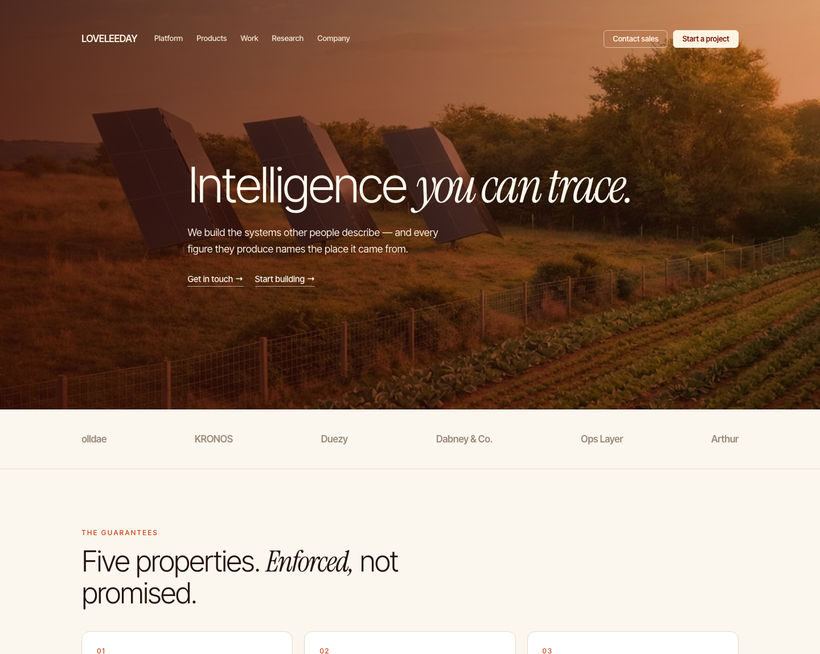
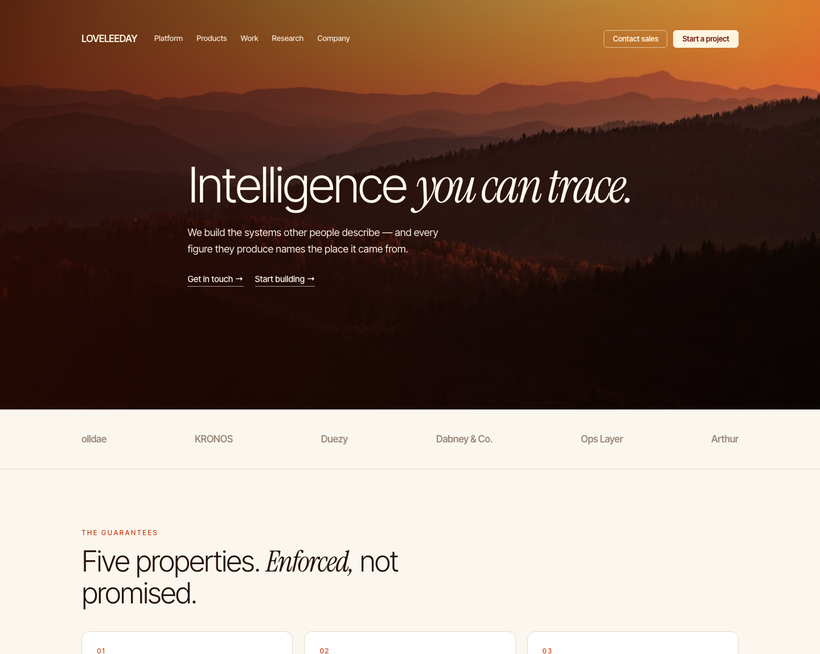
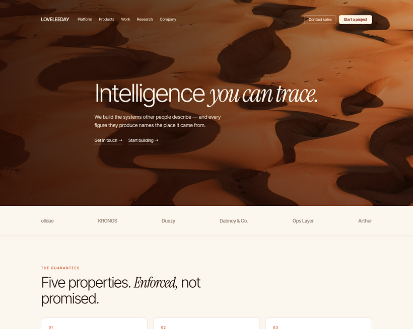
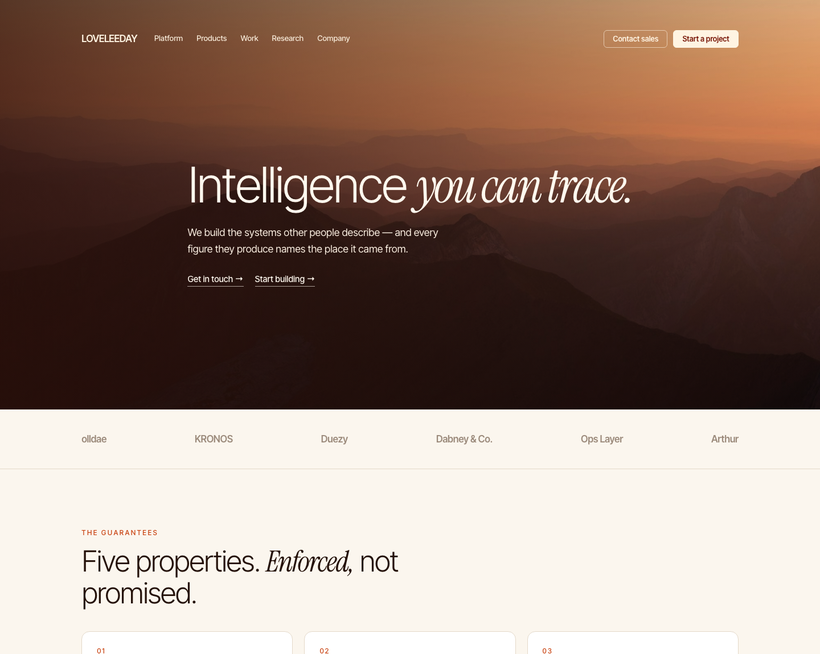
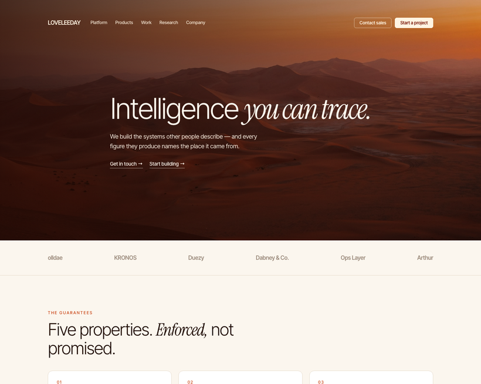
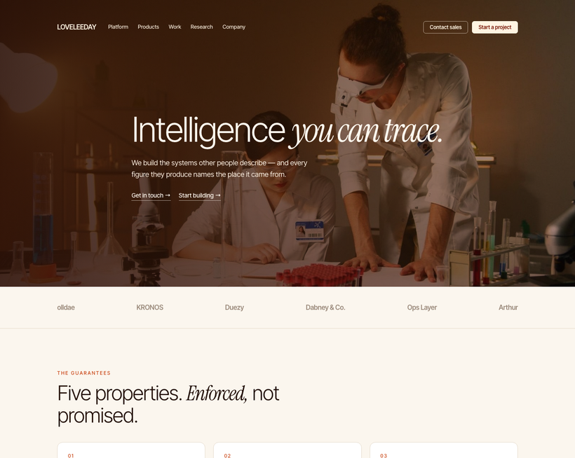
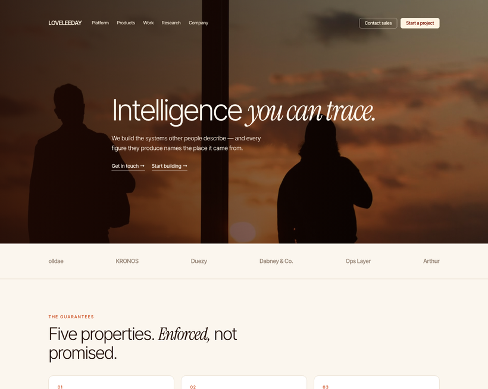
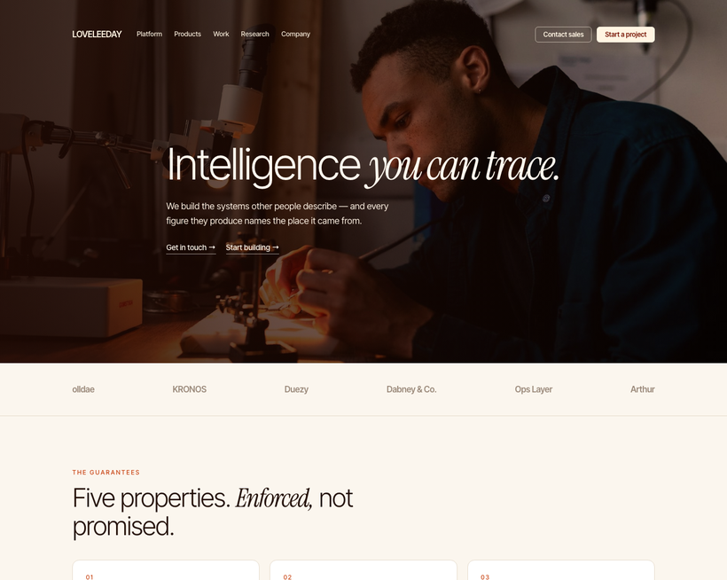
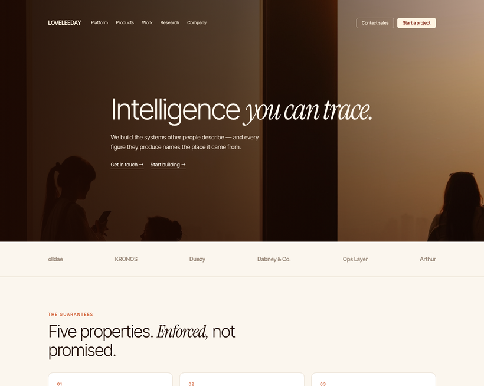
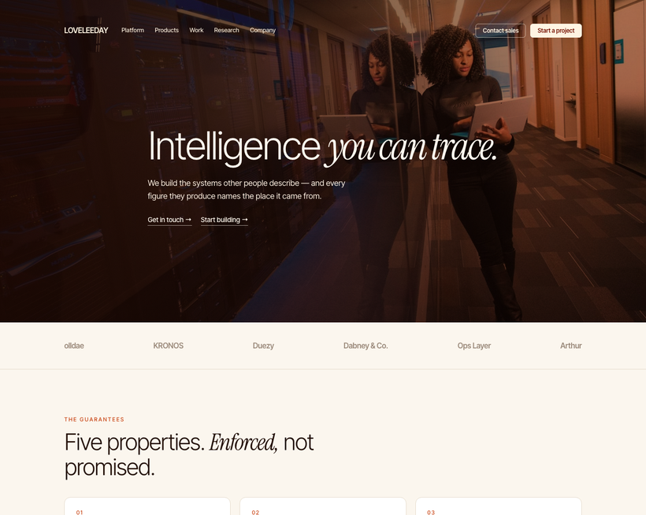

Concept 12 · Solstice · hero variations
The type, the grade and the layout are held constant so the only variable is the picture. Five are landscape and five have people in them; the people set is anchored so the subject sits in the LIGHT half, opposite the type, and its amber wash is pulled back, because a heavy grade over skin goes orange and sickly. Each hero is the photograph, then a multiply wash in the Solstice amber that pulls every image onto one palette, then a directional scrim. The contrast figures on each card were sampled from the rendered pixels underneath the headline, not assumed — which is the only reason to put white type over a photograph you did not take. A is the studio’s own photograph, and it is first on purpose.

The studio's own photograph — utility-scale solar at golden hour, from a system we built and run. The only one of the five that is evidence as well as art.

Layered ridges under a burning sky. The closest of the five to the reference, and the one that reads biggest — depth in the image does the work a gradient fakes.

Shot straight down. It reads as pattern rather than place, which keeps the page abstract — useful for a company that is not selling a location.

The quietest. Pastel layers and a high horizon, graded warm rather than born warm — the most typographic of the five, because the picture argues least.

Rust dunes against far mountains. The most saturated, and the one that would carry a dark navigation bar best if the brand ever needs one.

The studio's own photograph — two scientists at the bench, warm lamp light. People and evidence in the same frame, which is the only version of this that is both.

Backlit figures at a window. People are unmistakably present and nobody's face is competing with the headline — the most Solstice-native of the people set.

A single maker under a lamp. The most intimate, and the best fit for a page that argues craft rather than scale.

Several people in a room full of late light. The only one that reads as a team rather than as an individual.

The studio's own photograph, and the hardest of the ten: it arrives blue, so the amber has to do real work. Proof that the grade is a system rather than a filter that only flatters images already the right colour.